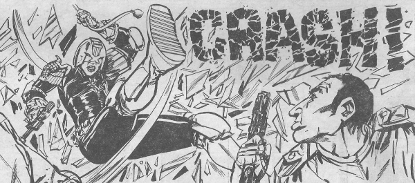

A Cadet Judge that Dredd assesses for the full eagle.
Art by Kim Raymond
| Story Title | Parts | Pages | w indicates a wraparound coverCovers | Year(s) | Issues | Writer | Artist | Colourist | Letterer |
|---|---|---|---|---|---|---|---|---|---|
From Judge DreddSuperbowl | 2 | 12 | 370: Kim Raymond 1 | 1984 | 370-371 | Alan Grant John Wagnervarious | Kim Raymond | <-- 4pp, [b&w] | Tony Jacob |
From Judge DreddBingo | 1 | 6 | Kim Raymond 1 | 1984 | 372 | Alan Grant John Wagnervarious | Kim Raymond | <-- 2pp, [b&w] | Tom Frame |
From Judge DreddThe Making of a Judge | 1 | 7 | 0 | 1984 | 373 | Alan Grant John Wagnervarious | Kim Raymond | <-- 2pp, [b&w] | Tom Frame |
From Judge DreddMuzak Killer | 3 | 18 | 748: Dermot Power 1 | 1991 | 746-748 | Garth Ennis | Dermot Power | <-- | Tom Frame |
From Judge Dredd Megazine crossover.Judgement Day | 20 | 150 | 786: Peter Doherty M2.04: Dean Ormston 788: Brian Williamson M2.07: David Bishop 794: Brett Ewins 796: Carlos Ezquerra 798: Peter Doherty 799: Carlos Ezquerra 8 | 1992 | 786-799, M2.04-2.09 | Garth Ennis | Peter Doherty 1‑2, 10‑11, 19 Carlos Ezquerra 4‑5, 7‑8, 13‑14, 16‑17, 20 various | <-- | Tom Frame |
| >> Features << | |||||||||
From Justice Department Data‑FileDekker | 1 | 1 | 0 | 1984 | JDA'85 | editorial | Kim Raymond | [grayscale] | n/a |
| >> Text Stories << | |||||||||
| The Rookie | 1 | 8 | 0 | 1985 | JDA'86 | unknown | unknown | [b&w] | n/a |
| year | episodes | pages |
| 1978 | 0 | 0 |
| 1979 | 0 | 0 |
| 1980 | 0 | 0 |
| 1981 | 0 | 0 |
| 1982 | 0 | 0 |
| 1983 | 0 | 0 |
| 1984 | 4 | 25 |
| 1985 | 0 | 0 |
| 1986 | 0 | 0 |
| 1987 | 0 | 0 |
| 1988 | 0 | 0 |
| 1989 | 0 | 0 |
| 1990 | 0 | 0 |
| 1991 | 3 | 18 |
| 1992 | 20 | 150 |
| 1993 | 0 | 0 |
| 1994 | 0 | 0 |
| 1995 | 0 | 0 |
| 1996 | 0 | 0 |
| 1997 | 0 | 0 |
| 1998 | 0 | 0 |
Comic strip data (excludes other content):